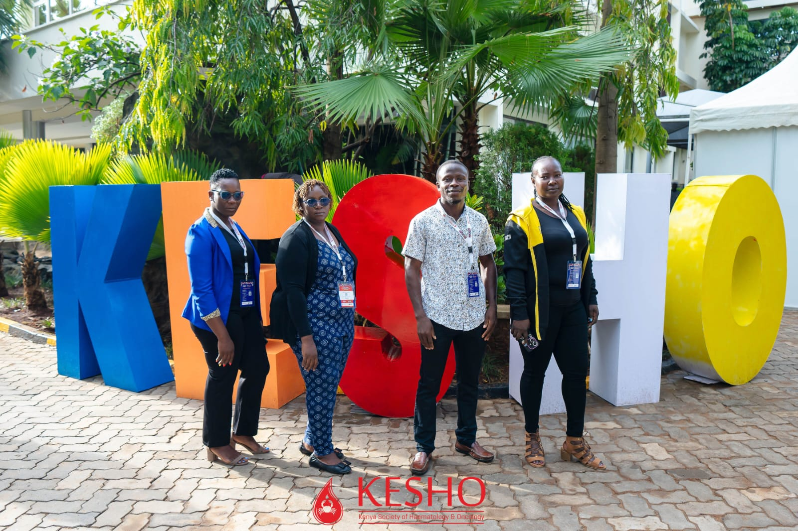

A Dashboard That Changes Lives
On November 26, 2024, I watched Governor Anyang’ Nyong’o officially launch the Kisumu County Cancer Epidemiology Dashboard - a tool that represents three years of meticulous work, thousands of patient records, and a vision to transform cancer care in East Africa.
As the Research Data Manager for this groundbreaking KEMRI project, I had the privilege of turning data into a weapon against one of healthcare’s most persistent challenges: patients lost to follow-up.

The Crisis We Uncovered
Our 10-year retrospective study at Jaramogi Oginga Odinga Teaching and Referral Hospital (JOOTRH) revealed a devastating reality:
The Stark Statistics
- 59% of cancer patients Lost To Follow-Up (LTFU) within the first year of care
- 5-year survival rate: just 9%
- 3,438 patients analyzed (2013-2023)
- Over half disappeared from care, leaving treatment incomplete and outcomes uncertain
- Advanced-stage diagnosis was the norm, not the exception
These numbers weren’t just statistics - they represented mothers, fathers, daughters, sons. People like Davin Adhiambo, who battled stage one uterine cancer, temporarily losing her sight and mobility, but who fought back to recovery.
Every percentage point represented a life that could be saved with better tracking, timely interventions, and data-driven care.
My Role: From Raw Data to Life-Saving Insights
As Research Data Manager under Principal Investigator Dr. Thomas Odeny (Washington University in St. Louis), I led the complete data lifecycle for this innovative project:
🗄️ Data Capture Architecture
Designed the REDCap database from scratch: - Created comprehensive data capture forms for 10 years of oncology records - Implemented validation rules to ensure data quality at point of entry - Built branching logic for complex treatment pathways - Designed fields for demographics, cancer types, staging, treatments, and outcomes
👥 Team Leadership & Training
Led and trained the data abstraction team: - Recruited and trained Research Assistants in medical chart abstraction - Developed standardized protocols for data extraction - Supervised chart abstraction across thousands of patient records - Created training materials and SOPs
🔍 Quality Assurance & Data Management
Implemented rigorous quality control: - Designed and conducted High-Frequency Checks (HFCs) using: - Python for automated validation scripts - R for statistical quality checks - Stata for medical data consistency verification - Performed comprehensive data cleaning - Resolved discrepancies through chart re-abstraction - Maintained data security and patient confidentiality

📊 Analysis & Insights
Conducted the epidemiological analysis: - Survival analysis using Kaplan-Meier methods - LTFU trend analysis by cancer type and stage - Geographic distribution analysis (Kisumu vs neighboring counties) - Treatment pathway analysis - Identified the 59% first-year LTFU rate - the finding that changed everything
📈 Dashboard Development
Built East Africa’s first cancer epidemiology dashboard in Tableau: - Designed real-time patient tracking interface - Created visualizations for: - Patient demographics - Cancer type distribution - Stage at diagnosis - Treatment timelines - Follow-up adherence - Geographic patterns - Survival outcomes - Anonymized patient data for HIPAA compliance - Built alerting system for at-risk patients
The Dashboard: Innovation in Action
What Makes It Revolutionary
This wasn’t just another data visualization - it was a clinical decision support system that brings together:
Real-Time Capabilities:
✅ Patient Journey Tracking - Follow every patient from diagnosis through treatment
✅ LTFU Risk Flagging - Identify patients at risk of dropping out before they disappear
✅ Intervention Triggers - Automatic alerts for missed appointments
✅ Outcome Monitoring - Track survival rates by cancer type, stage, treatment
✅ Geographic Intelligence - Understand where patients come from for strategic outreach
Key Insights Revealed
Our analysis through the dashboard uncovered critical patterns:
Cancer Type Distribution
Most prevalent cancers at JOOTRH:
- Cervical cancer - Leading cause
- Esophageal cancer - Second most common
- Breast cancer - High LTFU rate (48%)
- Prostate cancer - Growing concern

The Technology Stack
Building a healthcare tool of this sophistication required a robust technology approach:
Technical Implementation
Data Collection & Management: - REDCap - Secure clinical data capture - Python - Data validation automation - R - Statistical analysis & survival curves - Stata - Medical data consistency checks
Analysis & Visualization: - Tableau - Interactive dashboard development - SQL - Database queries and data warehousing - Excel/VBA - Data preprocessing
Quality Assurance: - Automated HFC scripts (Python) - Statistical validation (R) - Manual chart verification - Peer review protocols
Real-World Impact
Before the Dashboard
❌ No systematic way to track LTFU
❌ Limited understanding of cancer patterns
❌ Reactive rather than proactive care
❌ No data-driven resource allocation
❌ Patients falling through the cracks invisibly
After the Dashboard
✅ Real-time LTFU identification - Flag patients before they’re lost
✅ Targeted outreach programs - Re-engage patients who missed appointments
✅ Data-driven decisions - Allocate resources where needed most
✅ Strategic planning - Establish screening sites based on patient geography
✅ Improved survival - Early intervention for at-risk patients

The Launch: A Historic Moment
November 26, 2024 - Governor Anyang’ Nyong’o stood before healthcare leaders, researchers, and cancer survivors at JOOTRH and declared:
“This dashboard is a symbol of innovation and collaboration. It represents our commitment to ensuring that no cancer patient in Kisumu County falls through the cracks.”
The launch was attended by: - Governor Anyang’ Nyong’o - Kisumu County - Health CEC Dr. Gregory Ganda - Dr. Angela McBligeyo - Dr. Thomas Odeny - Principal Investigator (Washington University in St. Louis) - Dr. Fiona Adagi - Head of Cancer Department, JOOTRH - Cancer survivors and healthcare workers

Health CEC Dr. Gregory Ganda’s words captured the significance:
“By analyzing trends from 2013 to the present, we can make data-driven decisions to improve patient outcomes. This tool shows data for all cancer patients seen at JOOTRH - this is transparency and innovation at work.”
A Story of Triumph: Davin Adhiambo
During the Cancer Survivor’s Day celebrations, I met Davin Adhiambo, whose journey epitomizes why this work matters.
Diagnosed with stage one uterine cancer seven months earlier, Davin experienced: - Temporary blindness - Paralysis during treatment - Fear and uncertainty
But through the specialized care at JOOTRH - the same hospital our dashboard serves - her sight and mobility were restored.
“I used to say cancer ni ugonjwa mbaya (cancer is a bad disease). But I’ve overcome my fears and gained courage through this experience.”
Today, her cancer has been reduced to 1%. She’s studying at Migosi Institute of Science and Technology, dreaming of becoming a social worker.
This is what data-driven care can achieve.
Stories like Davin’s fuel my passion for health data science. Every chart I abstracted, every line of code I wrote, every validation rule I implemented - it was all for people like her.

Lessons Learned: Building Healthcare Tech in Africa
Technical Challenges
- Data Quality Issues
- Incomplete medical records from earlier years
- Inconsistent documentation standards
- Missing follow-up data
- Solution: Implemented multi-level validation, re-abstraction protocols
- Infrastructure Limitations
- Limited internet connectivity
- Inconsistent power supply
- Solution: Offline data collection, batch synchronization
- Training Barriers
- Staff turnover in data abstraction team
- Varying technical literacy
- Solution: Comprehensive training modules, continuous mentorship
What Worked
✅ Community Involvement - Engaging healthcare workers from the start
✅ Iterative Development - Regular feedback loops with clinicians
✅ User-Centered Design - Dashboard built for actual clinical workflows
✅ Open Communication - Weekly team meetings to address challenges
✅ Rigorous QC - Multiple layers of data validation
The Road Ahead
This dashboard is just the beginning. The next steps include:
Immediate Plans
- Automated SMS reminders for missed appointments
- Mobile app for patient self-reporting
- Integration with KHIS (Kenya Health Information System)
- Expansion to other cancers beyond the initial four types
Long-Term Vision
- Regional rollout to other counties in Western Kenya
- AI-powered prediction of LTFU risk
- Treatment outcome modeling using machine learning
- National cancer registry integration
Technical Deep Dive: The Dashboard Features
For the Data Science Community
If you’re building similar healthcare tools, here’s what we implemented:
1. Patient Tracking Module
# Sample HFC code for LTFU detection
def flag_ltfu_risk(patient_df):
"""
Identifies patients at risk of loss to follow-up
based on appointment adherence patterns
"""
# Calculate days since last visit
patient_df['days_since_visit'] = (
pd.Timestamp.now() - patient_df['last_visit_date']
).dt.days
# Flag based on cancer type-specific thresholds
thresholds = {
'breast': 60,
'cervical': 45,
'prostate': 90,
'esophageal': 30
}
patient_df['ltfu_risk'] = patient_df.apply(
lambda row: row['days_since_visit'] >
thresholds.get(row['cancer_type'], 60),
axis=1
)
return patient_df[patient_df['ltfu_risk']]2. Survival Analysis
- Kaplan-Meier curves by cancer type and stage
- Cox proportional hazards modeling for risk factors
- Competing risks analysis (death vs LTFU)
3. Dashboard Performance
- Query optimization for real-time updates
- Data caching for frequently accessed views
- Role-based access for data security
- Mobile-responsive design for field use
Why This Matters: The Bigger Picture
Cancer doesn’t discriminate. But access to quality, sustained care often does.
In resource-limited settings like Kisumu County, the difference between life and death often comes down to: - Early detection (too many present at advanced stages) - Treatment adherence (59% lost in first year) - Follow-up care (48% of breast cancer patients never return)
Data can change this equation.
By making the invisible visible - by tracking every patient, flagging every missed appointment, understanding every barrier to care - we can:
- Save lives through early intervention
- Optimize resources by understanding true needs
- Inform policy with evidence-based insights
- Build systems that don’t let people fall through cracks
This is the promise of health data science.
Acknowledgments
This project succeeded because of an extraordinary team:
Research Leadership: - Dr. Thomas Odeny - Principal Investigator (Washington University in St. Louis) - Dr. Fiona Adagi - Head of Cancer Department, JOOTRH
Government Support: - Governor Anyang’ Nyong’o - Kisumu County - Health CEC Dr. Gregory Ganda - Dr. Angela McBligeyo
Data Abstraction Team: - Research Assistants who spent months in medical records - Clinical staff who provided guidance - IT support at JOOTRH
Funding & Institutional Support: - KEMRI (Kenya Medical Research Institute) - JOOTRH Administration
And most importantly: The 3,916 patients whose records built this knowledge, and the survivors like Davin Adhiambo who inspire us to keep fighting.
Publications & Presentations
This work has been presented at:
- KEMRI Annual Scientific Conference 2024
- Oral presentation on LTFU trends
- View abstract →
- East African Health Research Conference 2024
- Poster presentation on dashboard development
- Download poster →
- Manuscript in preparation:
- “Loss to Follow-Up Among Cancer Patients in Western Kenya: A 10-Year Retrospective Analysis”
- Target journal: PLOS ONE
Get Involved
For Researchers
Interested in replicating this approach in your region? I’m happy to share: - REDCap templates - HFC scripts (Python/R/Stata) - Dashboard design principles - Lessons learned
Contact: nichodemuswerre@gmail.com
For Healthcare Organizations
Looking to implement similar tracking systems? Let’s talk about: - Customizing the dashboard for your facility - Training your data team - Adapting workflows to your context
For Data Scientists
Want to contribute to health data science in Africa? - Open source tools - surveyKE development - Collaborative research - Ongoing studies - Capacity building - Training opportunities
Final Thoughts
Three years ago, this was just an idea: “What if we could see every cancer patient’s journey in real-time?”
Today, it’s reality. A dashboard running at JOOTRH, helping clinicians save lives.
But the real measure of success won’t be in the technology we built or the papers we publish. It will be in:
- The mother who doesn’t get lost to follow-up because we flagged her risk
- The patient who gets early intervention because we caught stage progression
- The healthcare system that allocates resources based on data, not guesswork
- The survival rates that climb from 9% toward something better
This is why I do health data science.
This is why data matters.
This is what impact looks like.
“Data isn’t just numbers. It’s lives saved, families kept together, hope restored.”
For Davin, and the thousands like her.
Connect
Have questions about this project? Want to discuss cancer epidemiology, health data management, or dashboard development?
Let’s talk:
📧 nichodemuswerre@gmail.com
💼 LinkedIn
🐙 GitHub
Tags: #CancerResearch #HealthDataScience #KEMRI #Tableau #REDCap #GlobalHealth #DataForGood #Kenya #Innovation
Published: November 26, 2024
Last updated: November 26, 2024
Reading time: 18 minutes